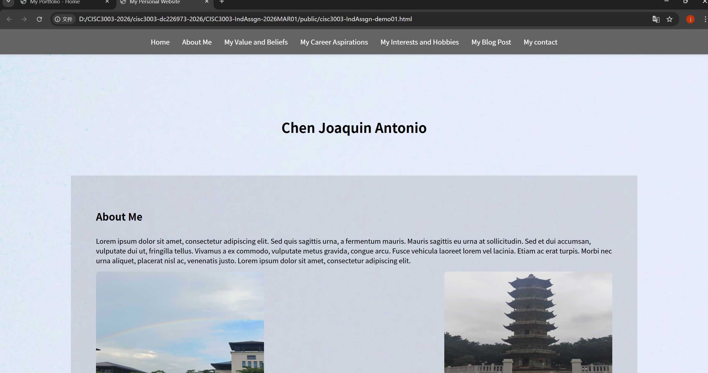

About Me
I am a passionate web developer currently studying CISC3003 Web Programming. I have a strong foundation in HTML, CSS, JavaScript, and web development principles. I enjoy creating modern, responsive, and user-friendly websites that deliver great user experiences.
My technical skills include HTML5, CSS3, JavaScript, responsive design, and version control. I am constantly learning new technologies to improve my craft and stay up-to-date with industry trends.
My Skills
HTML5
Semantic markup, accessibility, best practices
CSS3
Flexbox, Grid, Responsive Design, Animations
JavaScript
DOM Manipulation, ES6+, Basic Algorithms
Git/GitHub
Version Control, Collaboration, Deployment
Featured Projects

Responsive Website
A fully responsive website built with HTML, CSS, and JavaScript
Learn MoreContact Me
Feel free to reach out for any questions or opportunities!
dc22697.um.edu.mo
[+853] 65808552